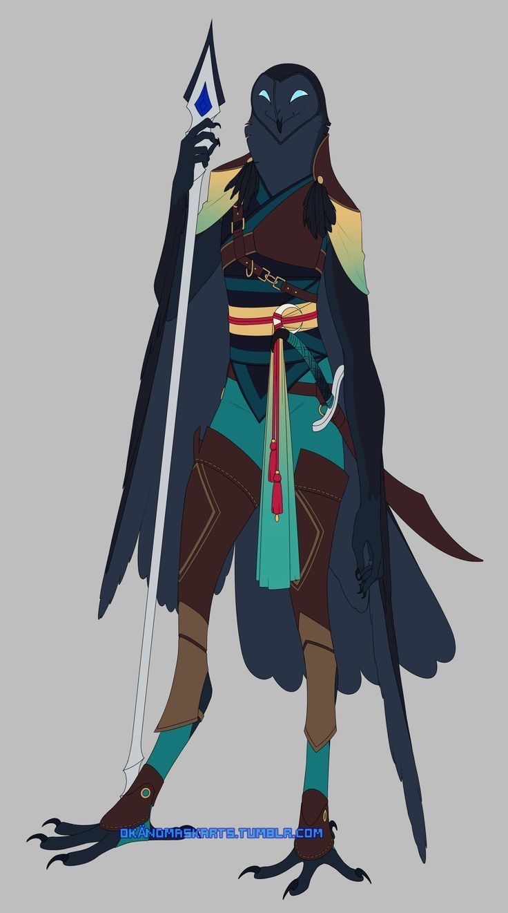
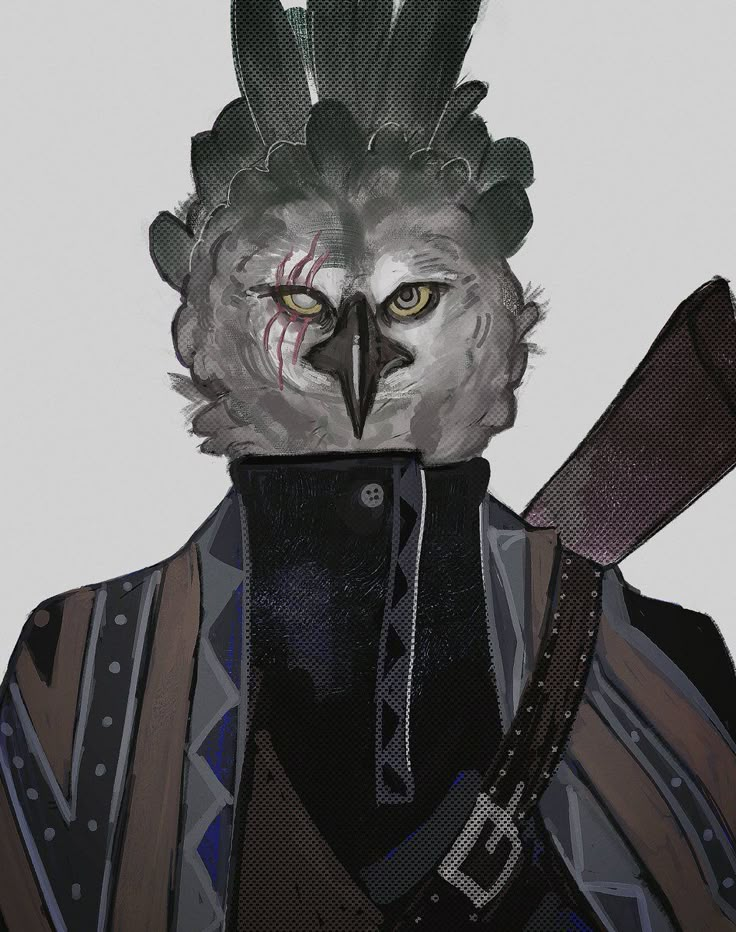

A Família Custodes é a linhagem responsável pela segurança e vigilância do Reino Flutuante. Seus antepassados lutaram lado a lado com a Dinastia Fênix na revolução que derrubou os Phyton, e desde então carregam o dever de proteger as ilhas — e sua gente — como se fossem as próprias asas do reino. Hoje, os Custodes governam [Inserir], respondendo diretamente à coroa em tudo o que envolve a defesa e a ordem interna.
✦ LIDERANÇA DA GUARDA

✦ família custodes
Gardênia Custodes
Lança em punho e lâmina às costas, Gardênia é o retrato vivo do que significa vigiar: sempre pronta, nunca descansada por completo. Como Duquesa de [Inserir], comanda pessoalmente as patrulhas mais delicadas do reino, treinando cada geração da guarda com a mesma disciplina que herdou de seus antepassados revolucionários. Foi ela quem trouxe Tiana para dentro da família — uma decisão que carregava tanto de dever quanto de afeto, e que hoje pesa mais do que nunca sobre seus ombros.

✦ família custodes
Harran Custodes
As cicatrizes no rosto de Harran contam mais sobre ele do que qualquer título. Duque de [Inserir] e marido de Gardênia, é um homem de poucas palavras, formado nas fronteiras onde a vigilância do reino é testada todos os dias. Enquanto sua esposa lidera pelo exemplo em campo, Harran sustenta a estrutura da guarda por trás das cortinas — e desde o desaparecimento de Tiana, é essa mesma frieza calculada que o impede de desmoronar.
✦ HERDEIROS

✦ família custodes
Tiana Custodes
Adotada por Gardênia ainda muito jovem, depois de anos vivendo em um orfanato, Tiana encontrou na Família Custodes a segurança que o nome da própria família promete a todo o reino. Mas essa promessa falhou uma vez: raptada novamente, ela foi vendida a Escarnos, e seu paradeiro atual é desconhecido. A família que jurou proteger o Reino Flutuante inteiro agora move céus e ilhas para encontrar a própria filha.